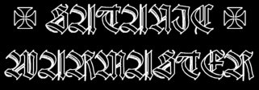
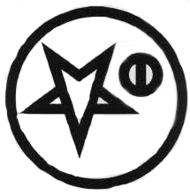
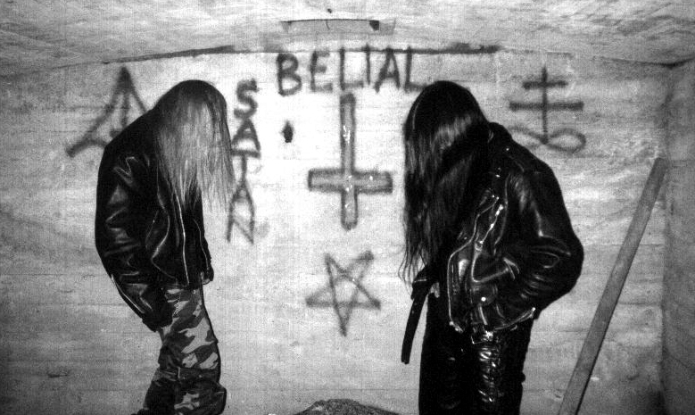

Satanic Warmaster
Кровь…Война…Сатана.… Всего лишь слова. Они могут стать девизом чьей-то жизни. Они могут быть последними словами перед чьей-то смертью. Они могут также выражать чью-то мечту и цель. Многое в этом мире существует против того, чтобы эта мечта стала чьей-то действительностью. Но как же возможно сделать ее явью и достигнуть заявленной цели, если наперекор внутренним стремлениям к тому, где вновь упомянуто имя Дьявола, существует мотив, противный Его природе – стать богом в человеке со всеми свойственными ему претензиями?
Всего лишь еще одно интервью с black-metal группой.

 Satanic Tyrant Werewolf
Satanic Tyrant Werewolf
Lord War Torech
CONTRA DEI: Как образовалась группа? Какие альбомы были выпущены, что ожидается в будущем?
Satanic Warmaster: Группа образовалась практически в то самое время, когда я начал играть Black Metal. Это был период 1993-94 года. Название и концепция команды претерпели множество изменений до момента 1998-99 года. Под именем SATANIC WARMASTER мы выпустили демо 1999 года «Bloody Ritual» и CD\LP «Strength and Honour». Сейчас мы ожидаем издания нашего нового альбома «Black Katharsis» в формате MCD\MLP на Northern Heritage. Остается добавить, что после записи этого диска к нам присоединился Herr Sarcofagian из известной финской группы BAPTISM в качестве барабанщика.
CD: Известно, что ты был вокалистом в группе HORNA. Почему ты решил оставить эту группу? На это, были личные либо какие-то иные причины?
SW: Да это верно, я оставил HORNA по личным мотивам, желая более сконцентрироваться на своем творчестве и его выражении.
CD: Что ты думаешь о финской Black Metal сцене? Какие группы ты готов поддержать, а какие являются лишь фальшивкой?
SW: Есть несколько очень хороших групп на финской Black Metal сцене, и многие из них дружественны нам. Такие группы как – WARLOGHE, HELWETTI, CLANDESTINE BLAZE, ANNIHILATUS, BAPTISM etc заслуживают моего уважения и поддержки. Я предполагаю, что каждый сам может сказать, какие группы являются шлюхами, продающими себя за 15 минут славы в Black Metal.
CD: Northern Heritage – лейбл, который вас выпускает. Что есть особенного для вас в этом лейбле, и почему вы подписали с ними контракт? Что вы можете рассказать об этом лейбле?
SW: На самом деле, наш новый MCD будет последним релизом Satanic Warmaster под маркой Northern Heritage. После этого релиза мы покинем этот лейбл и начнем сотрудничество с NO COLOURS RECORDS (Германия) против засилья коммерческих шлюх. Для меня было естественным сотрудничать с Northern Heritage, а после издания PEST это сотрудничество стало еще более достойным. Northern Heritage – истинный и честный лейбл, который может дать 100% поддержки тем, кто этого заслуживает!
CD: Каково твое мнение о ситуации, сложившейся на Black Metal сцене? Каковы причины вырождения стиля? Какие группы тебе импонируют?
SW: На мой взгляд, большая часть оставшегося духа настоящего Black Metal, полностью вернулась обратно в андеграунд. Я думаю, что это произошло из-за того, что многим людям стало доступным и возможным воплощение мечты стать рок звездой за счет Black Metal. Это привело Black Metal к потере его особого смысла. Есть несколько современных групп, которые мне нравятся. Это: ABSURD, KATHARSIS, MUTIILATION, VELES, CAPRICORNOUS, BLACK WITCHERY, GRAVELAND, EVIL, GOATFIRE, MOONBLOOD, VLAD TEPES, CELESTIA, KRIEG, NARGAROTH, FOREST, BRANIKALD etc. Конечно, мне близки и множество старых норвежских групп, а также такие как: SARCOFAGO, BLASPHEMY, BEHERIT (Боги навсегда!).
CD: Были ли у вас когда-либо живые выступления?
SW: До сегодняшнего дня у нас не было живых выступлений. Мы планируем сыграть ряд концертов в будущем. Это не так уж обязательно, исполнять Black Metal живьем. Но если группа может захватить слушателя своей Идеей, то это по мне. Это всегда будет хорошим способом – заражать людей своими мыслями и идеями во время выступления.
CD: Ваша группа определенно сатанинской направленности. Что Сатанизм означает для вас?
SW: Да все верно. Сатанизм для меня это высокомерие и уверенность в своих силах, преданность, сила, мудрость, гордость и борьба за то, чтобы стать богом в человеке. Это также связано с тайными и темными созидательными / разрушительными силами Вселенной.
CD: В продолжение этой темы… Многие люди отождествляют Сатанизм с неприятием христианской религии и морали, а также с противодействием ей по мере своих возможностей. Другие же проводят четкие границы между Сатанизмом и так называемым антихристианством и желают утверждения абсолютной человеческой свободы и совершенства самого себя, независимо от Дьявола и бога. Твое мнение по поводу этой ситуации?
SW: Я бы не хотел прожить свою жизнь, воспринимая ее через призму христианского мировоззрения или же воспринимая Сатанизм лишь как вывернутое, либо перевернутое христианство. Для меня это было бы предательством самого себя, поскольку это означало бы быть христианином. Я вижу и понимаю Сатану отнюдь не как библейское создание. С моей точки зрения корни архетипа Сатаны лежат своим основанием в индоевропейской (не христианской и не еврейской) культуре.
Очень часто можно увидеть агностиков и атеистов, прикрывающих свой никчемный образ жизни сатанинской символикой. В основном это обусловлено интересом подобных людей к субкультуре Heavy Metal... Я считаю, что это не интересно.
CD: Какова твоя основная цель как сатаниста?
SW: Управлять тем, что создано мной.
CD: События сентября 2001 года надолго станут причиной горя и мучительных воспоминаний одних людей, а также радости и вдохновения других. Твои ощущения от этого происшествия? Твой взгляд на терроризм вообще, включая и радикальные методы исламского фундаментализма?
SW: Я был счастлив видеть, что США наконец получили то, что заслужили за свое политическое влияние и господство во все мире.
Я чувствую что, терроризм неизбежен и необходим в ситуации, когда не существует других политических путей достижения того, что бы твои слова были услышаны людской массой. По поводу ислама… Я испытываю лишь негативное отношение к нему, как и ко всем основным организованным религиям этого мира. Это лишь еще один хороший пример контроля над людской массой.
CD: Экстремизм афишируется Black Metal как обязательная его составляющая. Каким он должен быть тогда: внутренним, направленным на достижение новых целей, превосходства или же, должен иметь и внешнее проявление?
SW: Любые чувства могут быть выражены в Black Metal. Все, что неестественно, есть полная ложь, включая и экстремальность. Есть очень много групп, достигающих экстремального внешнего образа ничтожными и поверхностными трюками. Мне противно на все это смотреть. Любая экстремальность может быть великой вещью, если сопутствует достижению высших целей и обретению высшего эстетического опыта.
CD: Армагеддон? Война?
SW: Конец мира на самом деле мало меня касается. Война – это просто способ решения конфликтов. Причины войны гораздо важнее самой битвы.
CD: Каких людей ты можешь назвать своими друзьями? Кто твои враги? Хотел ли ты убить кого-нибудь?
SW: Из тех людей, кто рядом со мной, я мог бы назвать друзьями тех, кто честны перед собой и поддерживают мои убеждения. У меня слишком много врагов, чтобы их упоминать. Я убил бы, если бы мне было необходимо это сделать. Хотя это не то, что мне обязательно понравится.
CD: Кроули, Ницше, ЛаВей…Эти популярные имена называют многие, говоря о фундаментальных принципах и развитии Сатанизма. Твое мнение о работах этих авторов? Почему многие в среде Black Metal так негативны по отношению к ЛаВею?
SW: Я считаю, что ЛаВей смешал идеи Кроули, Ницше и Рагнара Краснобородого, получив тем самым гораздо более обширную аудиторию за счет этих личностей. Антипатия к ЛаВею исходит от старых дней норвежского Black Metal, деятели которого игнорировали его.

CD: Можно ли говорить о разделении Сатанизма на истинный и ложный? В чем на твой взгляд различия или же Сатанизм неделим?
SW: Есть лишь два момента – подростковое извращенное христианство, нареченное ими «сатанизмом» и настоящий эзотерический Сатанизм.
CD: 666+88. Сейчас многие смешивают эти символы, пытаясь стать «еще злее». Но возможно ли смешивание Идеи и идеологии? Что ты думаешь по этому поводу?
SW: Конечно, как первое число, так и второе, выражает великое проклятие для обычных людей, и по мере шокирующего воздействия эти числа очень эффектны. Но все же число из еврейской книги лжи и цифровой код приветствия Heil Hitler! никак не могут соприкасаться. Это просто числовые значения, но абсолютно разные по смыслу.
CD: Обозначь свое отношение к NS. Сейчас это движение очень популярно в Black Metal. Но ведь Black Metal прежде всего это музыка Тьмы, Ненависти, Зла, Смерти.
SW: Отчасти NS отражает политическую и идеологическую сторону некоторых языческих ценностей, которые были утрачены под властью чуждой религии и культуры пришедших в Европу. Black Metal несомнено вдохновлен Тьмой, но разве не Тьма есть природа всех вещей? Кроме того, наша жизнь исходит из тьмы утробы и заканчивается во тьме могилы…
Ad Majorem Satanas Gloriam…
Salve Satanas.
Последние слова.
BLOOD, WAR AND SATAN!
P.o.box 169 531001 Lapenranta Finland |